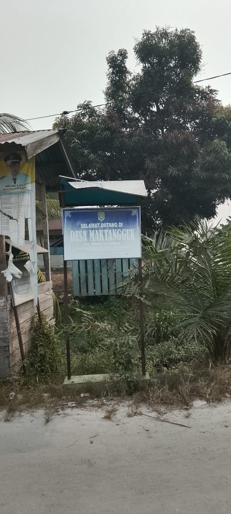

PROFIL DESA

TENTANG DESA
Desa Maktangguk merupakan bagian dari wilayah Kabupaten Sambas, Kalimantan Barat. Desa ini memiliki suasana pedesaan yang nyaman dengan lingkungan yang masih asri.
Dusun Karya Bhakti menjadi salah satu bagian dari kehidupan masyarakat Desa Maktangguk. Kehidupan masyarakat yang saling membantu menjadi salah satu nilai penting dalam kehidupan sehari-hari.
Maktangguk, Sambas, Kalimantan Barat
Karya Bhakti
Asri, tenang dan alami